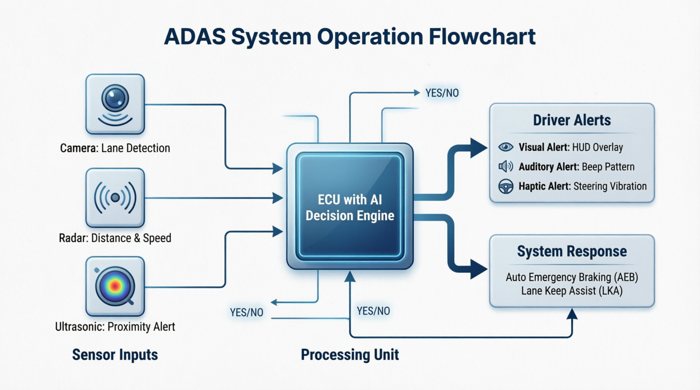
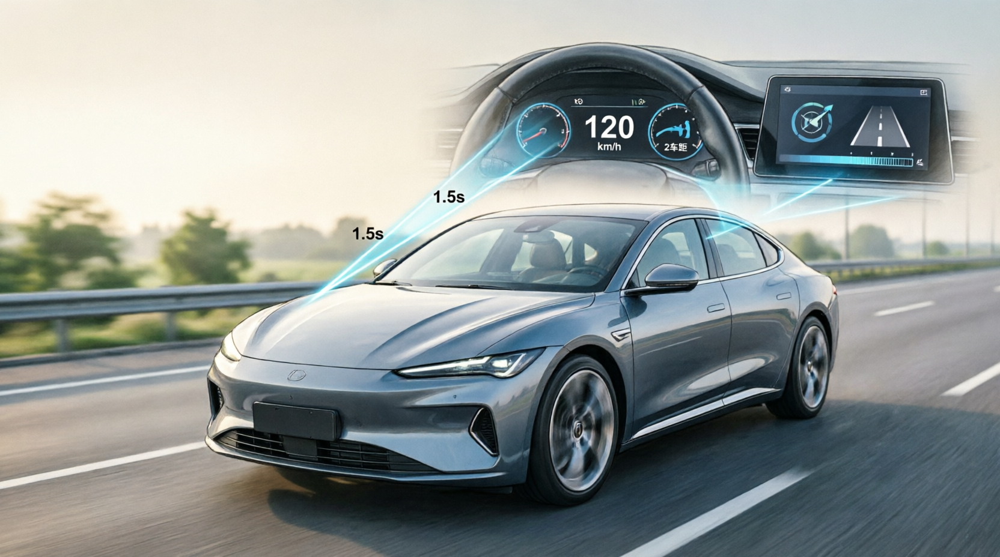
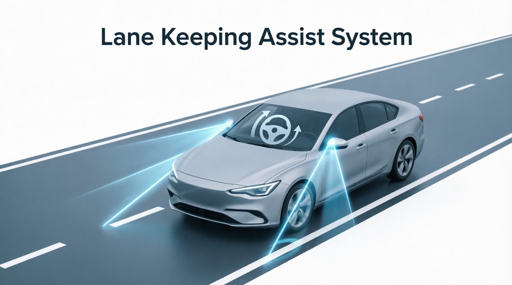
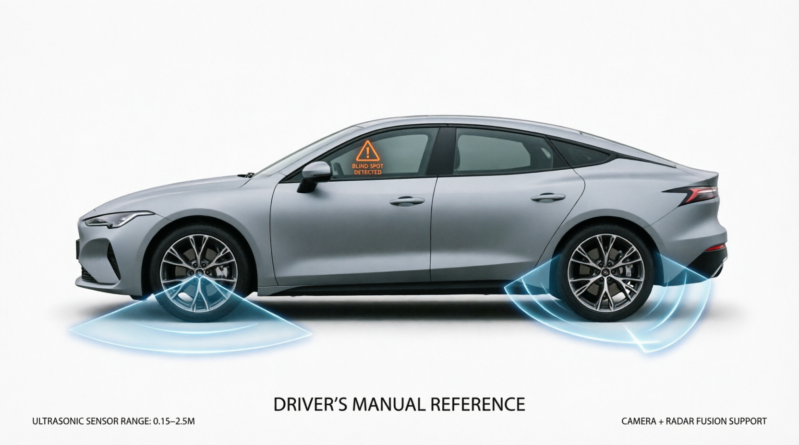

1. Información General del Sistema
1.1 Descripción del Sistema
Los Sistemas Avanzados de Asistencia a la Conducción (ADAS) representan la integración de múltiples tecnologías de detección, procesamiento y actuación diseñadas para mejorar la seguridad activa del vehículo.
1.2 Arquitectura del Sistema ADAS

Figura 1: Diagrama de flujo operativo del sistema ADAS
El diagrama anterior ilustra el flujo de información desde los sensores hasta las acciones del sistema:
Entradas de Sensor:
- Cámara: Detección de carriles y objetos visuales
- Radar: Medición de distancia y velocidad relativa
- Ultrasónico: Alertas de proximidad
Unidad de Procesamiento:
- ECU con motor de decisión IA procesa datos en tiempo real
- Tiempo de respuesta: <100 ms
- Fusión de sensores para validación cruzada
Salidas del Sistema:
- Alertas al conductor (visuales, auditivas, hápticas)
- Intervención activa (frenado, corrección de dirección)
2. Especificaciones Técnicas
2.1 Sensores y Características
| Parámetro | Radar Frontal | Cámara Estéreo | Ultrasónico |
|---|---|---|---|
| Frecuencia | 76-77 GHz | N/A | 48-52 kHz |
| Alcance | 1-200 m | 0.5-120 m | 0.15-2.5 m |
| Campo de Visión | ±9° horizontal | 120° horizontal | 80° cónico |
| Precisión | ±0.1 m distancia | ±5 cm carril | ±2 cm |
| Temperatura Op. | -40°C a +85°C | -20°C a +70°C | -30°C a +80°C |
2.2 Rangos de Operación
| Sistema | Velocidad Mínima | Velocidad Máxima | Condiciones Requeridas |
|---|---|---|---|
| ACC (Adaptativo) | 0 km/h | 200 km/h | Marcas viales visibles |
| LKA (Carril) | 60 km/h | 200 km/h | Marcas de carril claras |
| AEB (Frenado) | 5 km/h | 85 km/h | Detección confirmada |
| BSM (Ángulo muerto) | 10 km/h | Ilimitada | Sensores operativos |
3. Control de Crucero Adaptativo (ACC)
3.1 Descripción del Sistema
El Control de Crucero Adaptativo (ACC) mantiene automáticamente una velocidad preestablecida y una distancia de seguimiento segura respecto al vehículo precedente.

Figura 2: Sistema ACC en funcionamiento
3.2 Procedimiento de Activación
Paso a Paso:
- Verificación Previa:
- Verificar que el parabrisas frontal esté limpio
- Confirmar que no haya mensajes de error
- Activación:
- Presionar botón ON/OFF en el volante
- Acelerar hasta la velocidad deseada (mín. 30 km/h)
- Presionar SET/- o SET/+
- Ajuste de Distancia:
- Nivel 1: ~1.0 segundos (tráfico denso)
- Nivel 2: ~1.5 segundos (normal)
- Nivel 3: ~2.0 segundos (carretera)
- Nivel 4: ~2.5 segundos (alta velocidad)
4. Sistema de Mantenimiento de Carril (LKA/LDW)

Figura 3: Sistema LKA detectando carriles
4.1 Principio de Funcionamiento
El sistema LKA utiliza una cámara estéreo montada en el parabrisas para detectar las marcas viales y aplicar correcciones de dirección suaves.
4.2 Tipos de Alertas
| Nivel | Condición | Tipo de Alerta | Intensidad |
|---|---|---|---|
| 1 | Aproximación (>0.5 m) | Visual (icono ámbar) | Baja |
| 2 | Cruce inminente (<0.3 m) | Visual + Háptica | Media |
| 3 | Salida detectada | Visual + Háptica + Corrección | Alta |
5. Frenado Automático de Emergencia (AEB)

Figura 4: Sistema AEB detectando obstáculo
5.1 Niveles de Intervención
Icono rojo parpadeante + Alerta sonora + Pre-carga de frenos
Frenado automático: 0.3-0.5g de desaceleración
Frenado de emergencia: 0.8-1.0g + Luces de emergencia
6. Monitor de Ángulo Muerto (BSM)

Figura 5: Sistema BSM mostrando alertas laterales
6.1 Interpretación de Alertas
- Ámbar fijo Vehículo en ángulo muerto
- Ámbar parpadeante Cambio de carril con vehículo detectado
- Verde Sistema activo, sin vehículos
7. Asistente de Estacionamiento
7.1 Sensores Ultrasónicos
| Distancia | Frecuencia de Beep | Intensidad |
|---|---|---|
| 1.5 - 2.5 m | 1 beep cada 2 seg | Baja |
| 1.0 - 1.5 m | 1 beep cada 1 seg | Media |
| 0.5 - 1.0 m | 2 beeps por segundo | Alta |
| < 0.3 m | Beep continuo | Crítica |
8. Diagnóstico y Solución de Problemas
8.1 Mensajes de Error Comunes
| Código | Mensaje | Causa Probable | Solución |
|---|---|---|---|
| U1001 | ACC NO DISPONIBLE | Radar sucio | Limpiar parachoques |
| C1020 | LKA NO DISPONIBLE | Parabrisas sucio | Limpiar parabrisas |
| U1050 | AEB DESACTIVADO | Fallo de sensor | Recalibración requerida |
9. Mantenimiento y Calibración
9.1 Limpieza de Sensores
Frecuencia Recomendada:
- Normal: Cada 2 semanas o 5,000 km
- Polvo/caminos rurales: Cada semana
- Invierno: Antes de cada viaje
9.2 Intervalos de Mantenimiento
| Componente | Inspección | Limpieza | Calibración |
|---|---|---|---|
| Cámara Frontal | 10,000 km | 5,000 km | Según necesidad |
| Radar Frontal | 10,000 km | 5,000 km | Según necesidad |
| Sensores Ultrasónicos | 15,000 km | 3,000 km | No requiere |